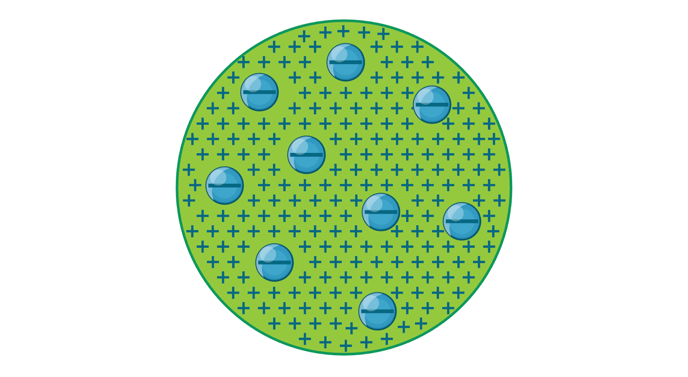
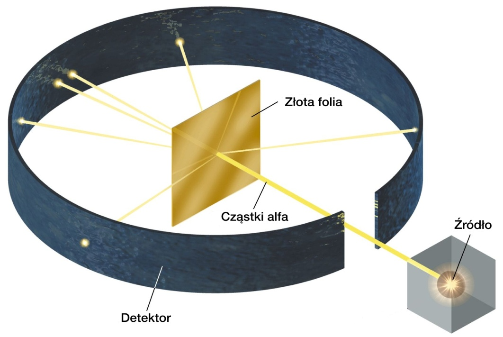
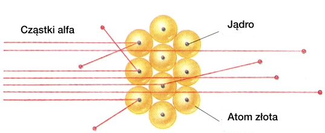
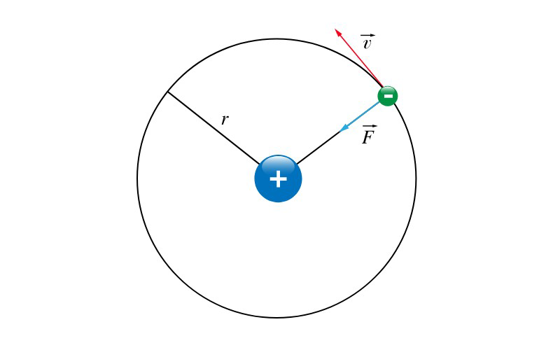
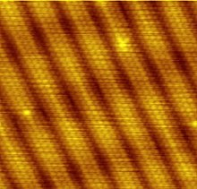
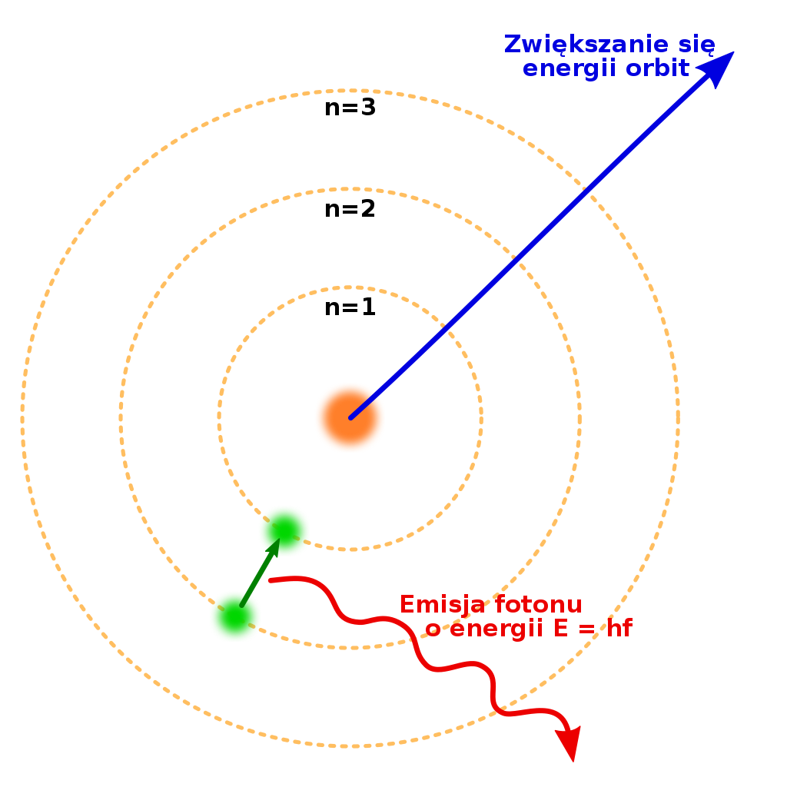
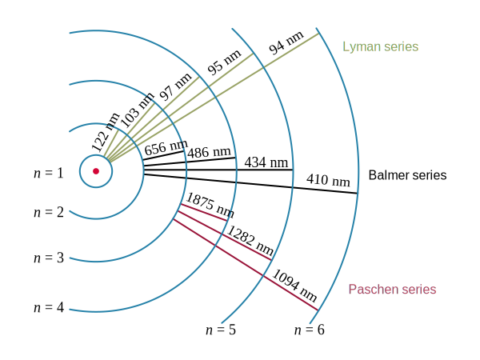

Fizyka Atomowa
Budowa atomu
Poglądy na budowę atomu
V w. p.n.e. Leukippos i Demokryt z Abdery wprowadzili pojęcie atomu jako niepodzielna część materii. Atomiści doszli do wniosku, że atomy są w nieustannym ruchu oraz postulowali istnienie próżni.
Antyatomiści między innymi Arystoteles uważali, że świat zbudowany jest z żywiołów oraz zakładali brak próżni.
1661 Robert Boyl wprowadził pojęcie pierwiastka – pierwiastek to substancja, z której nie można już otrzymać metodami chemicznymi innej prostszej substancji – aktualne do dziś.
1808 John Dalton ogłosił swoje postulaty:
- materia jest złożona z niewidzialnych, niezniszczalnych i niepodzielnych atomów
- atomy jednego pierwiastka chemicznego mają identyczne masy i właściwości
- atomy różnych pierwiastków różnią się masą i pozostałymi cechami
- cząsteczka związku chemicznego składa się ze skończonej liczby atomów różnych pierwiastków.
1897 J. Thompson odkrył elektron a w 1904 r stworzył model atomu, w którym ujemnie naładowane elektrony unoszą się w jednorodnej, dodatnio naładowanej kuli (co przypomina rodzynki w cieście). Jednak bardzo szybko model ten został podważony przez Ernesta Rutherforda.
Rys 4.1. Model atomu Thomsona
Ernest Rutheford i jego dwaj pomocnicy – Hans Geiger oraz Ernest Marsden przeprowadzili eksperyment bombardowania cienkiej złotej folii cząstkami alfa, odkrytymi wcześniej przez Rutherforda.
Eksperyment Rutherforda był prosty w wykonaniu. Strumień cząstek padał na cienką złotą folię o grubości 0,00004 cm (4*10 -7 m). Umieszczony wokół ekran rozbłyskiwał, gdy uderzyła w niego cząstka . Na podstawie obserwacji rozbłysków można było wyznaczyć zmianę kierunku poruszającej się cząstki. Rys 4.2
Rys 4.2 Eksperyment Rutheforda
Prawie wszystkie cząstki przechodziły przez folię bez zmiany kierunku ruchu, co było niemożliwe w modelu Thomsona. Z kolei znaczne odchylenia torów cząstek , które mogłyby wskazywać na występowanie dużej siły odpychającej cząstki obserwowano bardzo rzadko. Zdarzało się, że cząstka odbijała się od folii i biegła w przeciwną stronę.
Na podstawie tego doświadczenia Rutheford stwierdził, że atom jest pusty i że musi istnieć obiekt, który skupia prawie cała masę atomu. Rutherford przyjął, że w atomie dodatni ładunek jest skupiony w bardzo małej objętości atomu, co sugerowało istnienie jądra atomowego. Elektrony znajdujące się w atomie miały krążyć po zamkniętych orbitach wokół jądra, tak jak planety krążą wokół Słońca. Model ten nazwano planetarnym modelem budowy atomu.
Rys 4.3
Rutheford oszacował rozmiar jądra atomu ma rozmiar 10 -15 ( rozmiar atomu to 10 -10) Promień atomu: 10-10 m stąd materia wydaje się jednolita
Rys 4.4 Obraz powierzchni kryształu złota uzyskany skaningowym mikroskopie tunelowym pokazujący pojedyncze atomy złota
Model Rutheforda miał jednak wiele niedoskonałości i w 1913 Bohr wprowadził pewne zmiany w modelu atomu.
Model atomu Bohra
Bohr korzystał z modelu atomu Rutherforda i przyjął, że atom wodoru zbudowany jest z dodatnio naładowanego jądra – protonu, wokół którego krąży ujemnie naładowany elektron. Cząstki te przyciągają się wzajemnie siłami zgodnymi z prawem Coulomba. Fizyk rozpatrywał energię całkowitą atomu jako sumę energii kinetycznej elektronu i energii potencjalnej układu proton – elektron. Jednak aby wyjaśnić stabilność atomów oraz kwestię emisji i absorpcji energii przez atom, przyjął dwa postulaty:
Pierwszy postulat Bohra: Elektron może krążyć wokół jądra tylko na orbitach spełniających warunek:
mrv = n*h/2Π, n= 1,2,3,…. gdzie:
r - promień orbity, po której krąży elektron;
m - masa elektronu;
v - wartość prędkości liniowej krążącego elektronu;
n - liczba całkowita określająca numer orbity elektronu;
h - stała Plancka (w przybliżeniu 6,63 * 10 -34J *s)
elektron krążący po takiej orbicie nie wysyła energii (jak wynikało to z fizyki klasycznej);
Zmiana energii atomu następuje tylko podczas przejścia elektronu między orbitami stacjonarnymi – przeskokowi z orbity wyższej na niższą odpowiada emisja energii, a przejście z powłoki niższej na wyższą spowodowane jest pochłonięciem energii. Energia jest wysyłana i pochłaniana przez atom w formie porcji (kwantów) energii o wartości wynikającej ze wzoru:
ΔE =En – Ek gdzie: n, k, – numery orbit, między którymi następuje przeskok elektronu.
Z założeń tego modelu wynika, że:
Atom nie emituje promieniowania, gdy znajduje się w stanie stacjonarnym. Każdemu stanowi stacjonarnemu atomu odpowiada ściśle określona wartość energii , którą można wyznaczyć ze wzoru:
En = -1/n2·A gdzie: A= 2,17·10-18J, n – główna liczba kwantowa (n= 1,2,3,...).
Wartości energii atomu (E1,E2,E3 …) noszą nazwę tzw. poziomów energetycznych atomu.
-
Atom może zmienić poziom energetyczny jedynie w wyniku emisji lub pochłaniania kwantów energii promieniowania.
Millikan w 1916 r. udowodnił, że zmianę energii stanu stacjonarnego w odniesieniu do atomu można wyrazić wzorem:
ΔE =En – Ek,= Efotonu = h·ν = h/cλ Promień orbity stacjonarnej jest równy
r = n2·r0 Wartość promienia dla n=1 jest równa r0 = 0,53·10-10; nazywa się ją promieniem pierwszej orbity Bohra w atomie wodoru
Atom wodoru najmniejszą energię ma w stanie, dla którego n= 1,2,3,...
Jest ona równa -2,17·10-18 Ten stan nazywamy stanem podstawowym. Stany o n= 2,3, 4,.. nazywamy stanami wzbudzonymi.
Rys 4.5. Model budowy atomu Bohra
Rys 4.6
Linie spektralne – wynik przeskoku elektronów z powłok o wyższej energii na powłoki o niższej energii.
Bibliografia
https://epodreczniki.pl/a/budowa-atomu-wodoru-stan-podstawowy-i-stany-wzbudzone/DP7PEhKBohttp://ilf.fizyka.pw.edu.pl/podrecznik/1/2/4
https://pl.wikipedia.org/wiki/Atom
https://rutherford.pl/informacje/doswiadczenie-rutherforda/
https://epodreczniki.pl/a/podsumowanie-wiadomosci-z-fizyki-atomu/Dsp9Rha8w
https://brain.fuw.edu.pl/edu/index.php/Chemia/Budowa_atomu
https://pl.wikipedia.org/wiki/Model_atomu_Bohra
Podręcznik: Fizyka z tangramem dla szkół ponadgimnazjalnych 2012 r Joanna Gondek